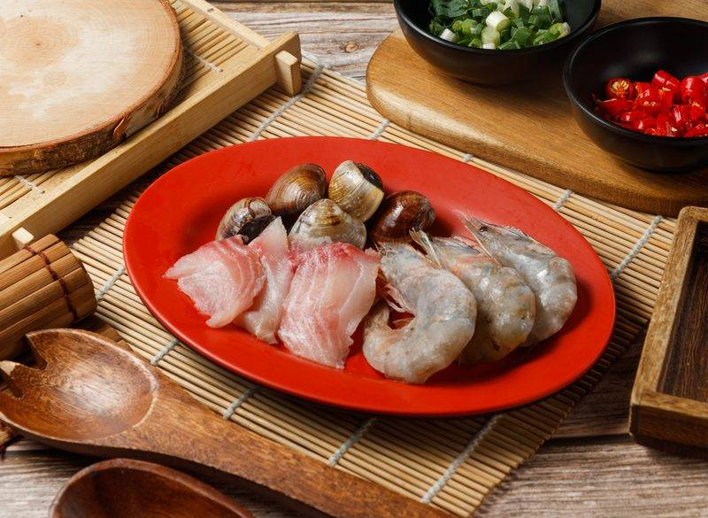
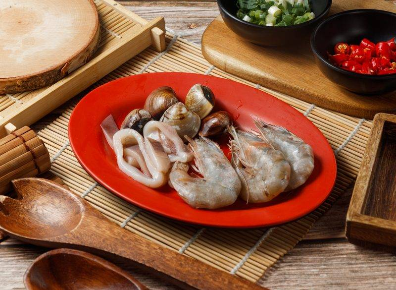
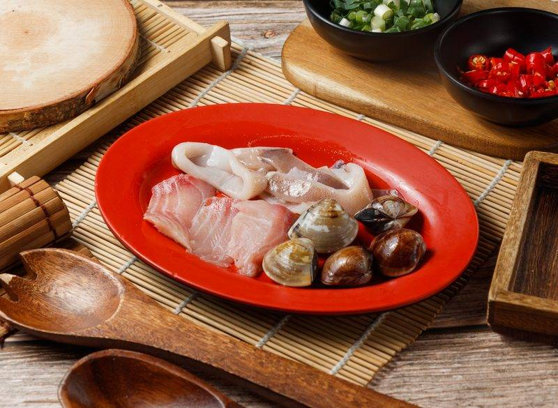
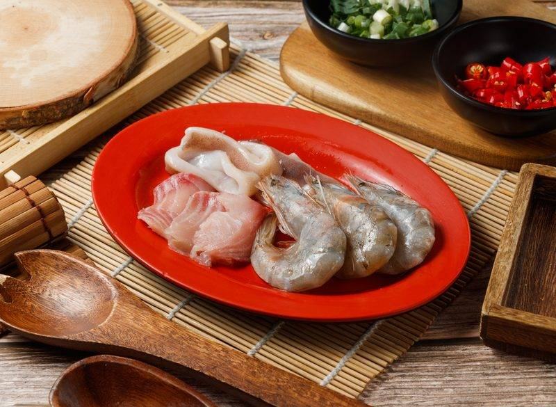

菜單價目｜鍋序 18 種鍋物
170 元起，18 種鍋物中多數是 190。內用外帶同價，換牛肉或羊肉 +10、加肉 +30。
經典
經典鍋物 170–200
170–200 元。第一次來，從這一區挑最安全。
| 品項 | 價格 |
|---|---|
| 原味鍋 | 170元 |
| 沙茶鍋 | 180元 |
| 麻辣鍋 | 180元 |
| 鯛魚鍋 | 190元 |
| 海鮮鍋 | 200元 |
豬肉為底價，雞肉不加價；換牛／羊 +10・加肉 +30・內用外帶同價
特色
特色鍋物 190–250
190–250 元。臭臭系列、泡菜、南瓜、牛奶都在這裡。
| 品項 | 價格 |
|---|---|
| 沙茶臭臭 | 190元 |
| 麻辣臭臭 | 190元 |
| 韓式泡菜 | 190元 |
| 養身藥膳 | 190元 |
| 田園番茄 | 190元 |
| 黃金南瓜 | 190元 |
| 香醇牛奶 | 200元 |
| 起司牛奶 | 210元 |
| 童心椰奶鍋限內用 | 240元 |
| 叛逆不乖鍋限內用 | 250元 |
豬肉為底價，雞肉不加價；換牛／羊 +10・加肉 +30・內用外帶同價
素食
素食鍋物 素食
素食鍋物獨立一區，與葷食同價。這三款不選肉、不加肉，價格就是表上的數字。
| 品項 | 價格 |
|---|---|
| 素食蔬菜鍋 素食 | 190元 |
| 田園番茄鍋 素食 | 190元 |
| 養身藥膳鍋 素食 | 190元 |
單點
單點 30 起
想吃豐盛一點，再從這裡加。
| 品項 | 說明 | 價格 |
|---|---|---|
| 火鍋料 | 每樣 30，任選兩樣 50 | 30元 |
| 蔬菜 | 每樣 35，任選兩樣 60 | 35元 |
| 鯛魚片 | 海鮮單點 | 65元 |
| 白蝦 | 海鮮單點 | 65元 |
| 蛤蜊 | 海鮮單點 | 65元 |
| 軟絲 | 海鮮單點 | 65元 |
| 海鮮拼盤 | A–D 四種組合（見下） | 99元 |




拼盤內容依 2026 年 4 月菜單板標示，實際品項以現場為準。
單點品項以現場菜單為準。
用餐須知
用餐須知
出發前先看一眼，少跑一趟。
- 用餐時間 90 分鐘。
- 共鍋費 100 元／人，可折抵單點加購（菜單板標示：身高超過 120 公分適用）。
- 禁帶外食與飲料。
- 外帶：電話或現場皆可，無價差。
- 不用訂位：現場候位為主。